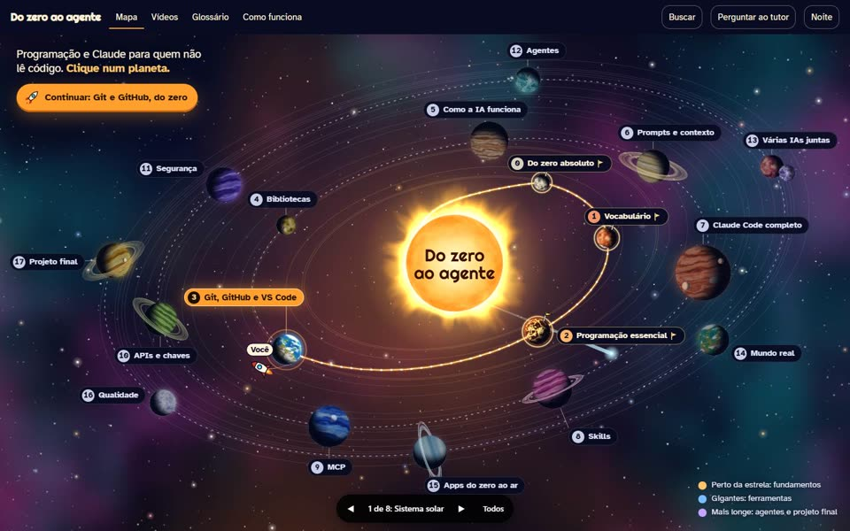
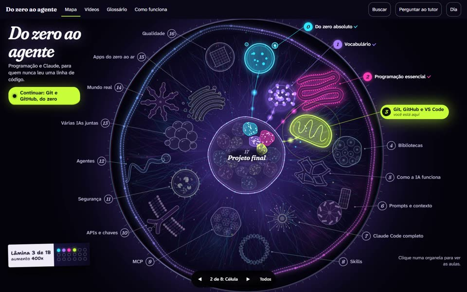
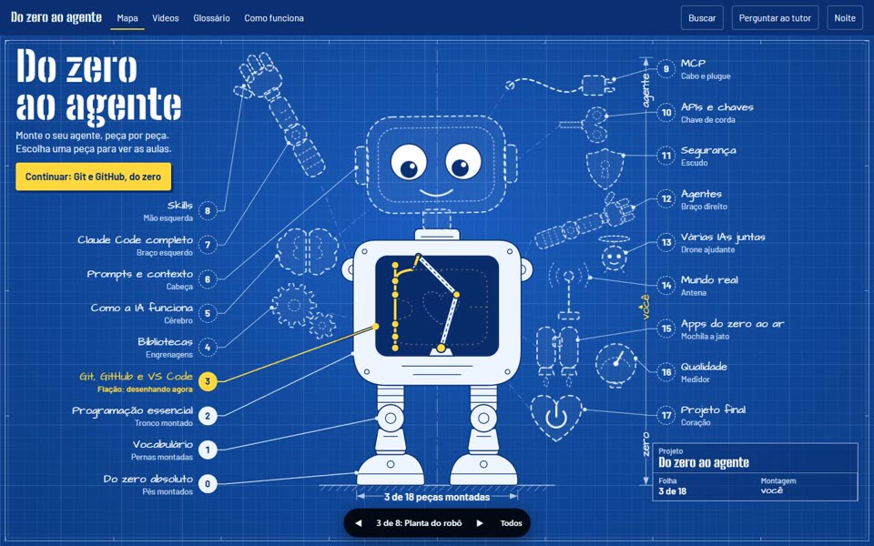
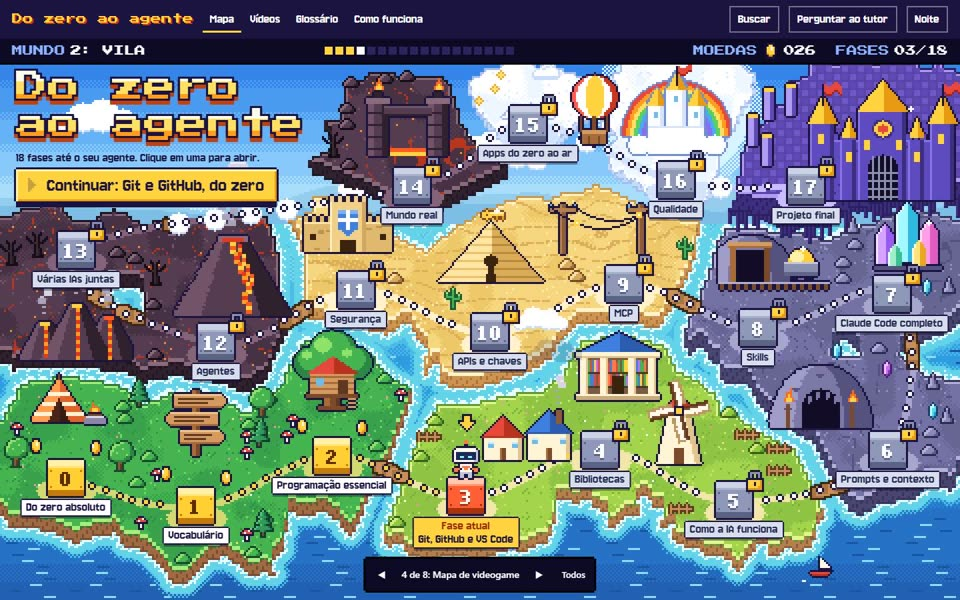
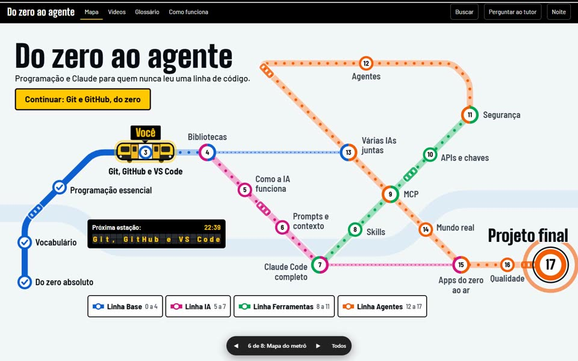
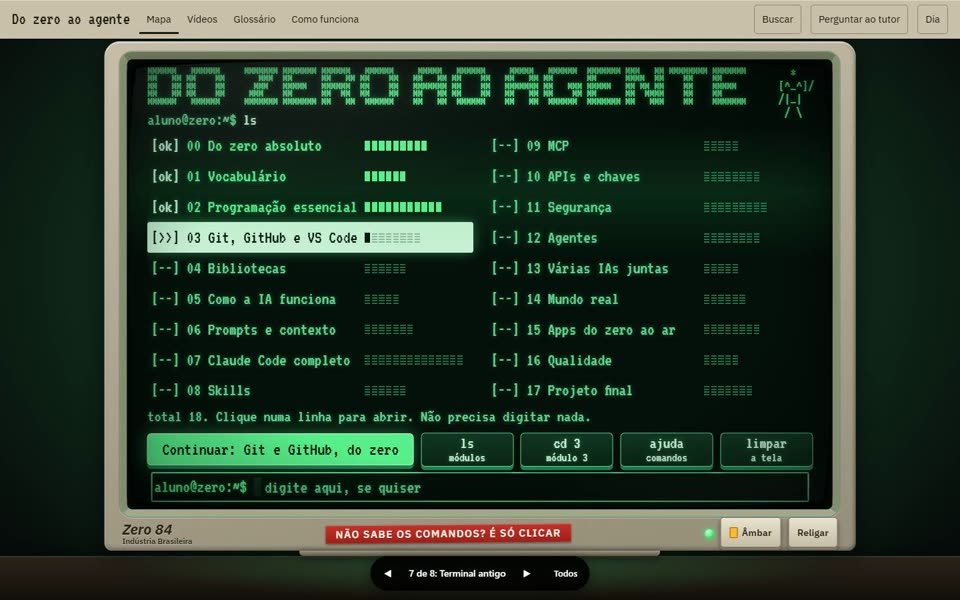
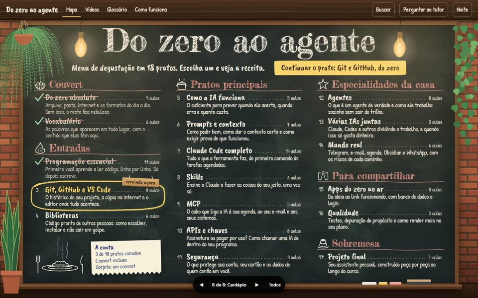

Escolha a aparência do curso
Oito caminhos diferentes para a página inicial. Toque em um para abrir e clique nos módulos. Dentro de cada tema, as setas embaixo levam ao próximo. O conteúdo e os vídeos ficam como já estão: aqui só muda a aparência.

1. Sistema solarCada módulo é um planeta, e você viaja de nave.
2. CélulaCada módulo é uma organela, vista ao microscópio.
3. Planta do robôCada módulo é uma peça do agente que você monta.
4. Mapa de videogameCada módulo é uma fase, em pixel art.- 5. Mergulho no oceanoRolar a página é descer, do barco até o abismo.

6. Mapa do metrôCada módulo é uma estação, em quatro linhas.
7. Terminal antigoUm monitor dos anos 80, em que dá para digitar de verdade.
8. CardápioO que não tem nada a ver: os módulos são os pratos de um menu.